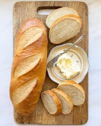

French Bread
Home

Description
I like this french bread recipe. It is easiest with a stand mixer.
- 1 Tbsp Yeast
- 1 Tbsp White Sugar
- 2 tsp Kosher Salt
- 2 1/2 c Warm Water
- 6-6 1/2 c All-Purpose Flour
- Activate the yeast.
- Add flour to desired consistency.
- Let the dough rise.
- Form loaves of bread.
- Let rise again.
- Prepare for baking.
- Bake.